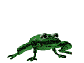

hello!
welcome to my journal! i likely won't update super often, but every now and then i'll add an entry. this will mostly be a space to kind of catalogue my feelings and talk about my current interests.
--------------------------
2021年12月27日
--*-*-*-*--
waaarrghgh!! today i have a Lot of feelings. this website is kind of making me feel an unhealthy amount of excitement!! get ready for a completely unedited word-vomit of all my feelings!!
first of all, i found out that retro-style live chat boxes still exist. for most of the old late 2000s early 2010s stuff, i kinda figured that the companies hosting them would try to rebrand and maybe die out. i'm so so happy i'm wrong! having a little chat box on here makes me just unbelievably happy. it makes me feel warm and sunny on the inside!!
second of all, i never really thought i could have so much fun making a website. i've been a little bit super fixated on getting this site set up, but now that everything's been mostly added i'm hoping my brain calms down a bit so i can get some more productive stuff done. until then, expect a lot of activity from me lol.
i guess there's also something else i realised (or rather, re-remembered) from making this... i have No Idea how to talk to people.
i just!! have no clue how small talk works!!! what do normal people write on guestbooks?? what's socially appropriate to say to strangers??? i'm still gonna try regardless, but DAMN lol. it kinda hit me all at once after making this how scary socializing is. i haven't actually talked to or written or just done much of ANYTHING publically since i was like 14; i don't even have a twitter!! if i head to your website and do something stupid im very sorry in advance T_T
that's all for today! expect other journal entries to be a bit shorter than this.
~-*-~
thank you for reading my journal!
OH ALSO i'm trying my hand at making a little favicon (current one is a free stock image lol). its a wip currently but its gonna be a frog. unfinished poorly drawn frog sneak peak: